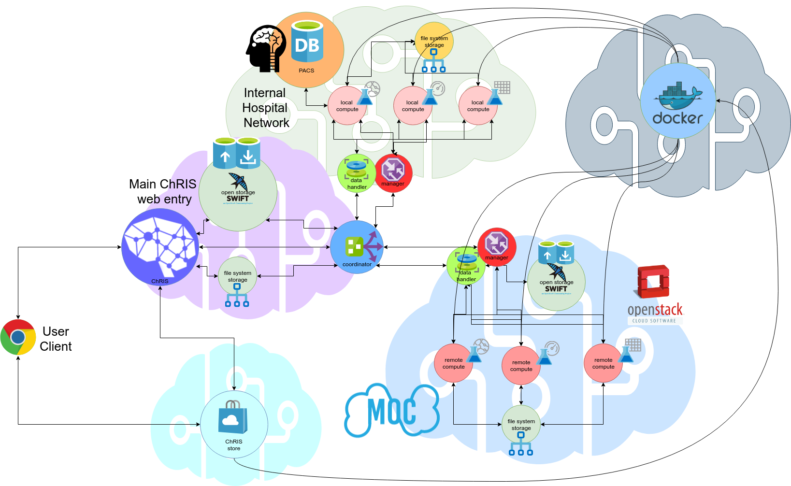
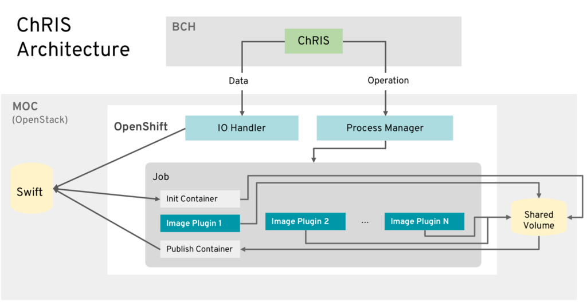
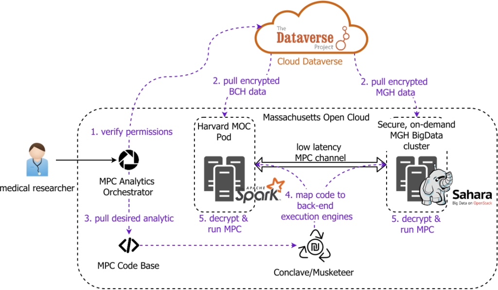
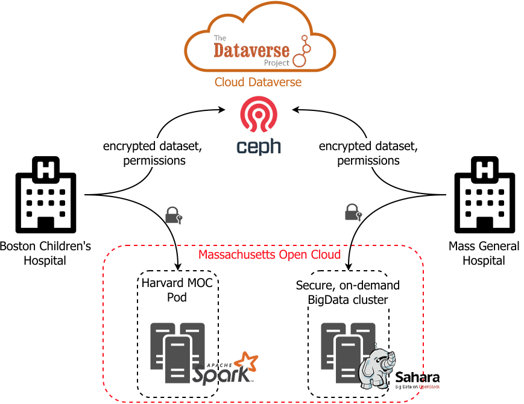

ChRIS is a pervasively open source framework that utilizes cloud technologies to democratize medical analytics application development and enables healthcare organizations to keep owning their data while benefiting from public cloud processing capabilities. ChRIS allows researchers the ability to simply deploy the same application they have already developed in a cloud infrastructure with access to more data, more compute, and more collaboration to drive medical innovation. ChRIS uses Docker/containers, Kubernetes/OpenShift, and a set of other technologies to standardize healthcare application development. An instance of ChRIS is already deployed over Boston Children’s Hospital (BCH) and Massachusetts Open Cloud (MOC), and it is possible to develop medical analytics plugins to be embedded into the BCH-MOC deployment. This deployment was recently highlighted in two recent keynotes at the Red Hat summit (1,2,3,4) with over seven thousand people in attendance.
Public Good
We live currently in the age of a new "informatics" gold rush. Data and analytics is fueling new industries and transforming others. Everywhere one looks, a plethora of companies (from Facebook, to Google, the Microsoft, to dozens of AI-based startups) are trying to stake their claim on what can fundamentally shape computing in the early 21st century. As more and more of our lives become ever intimately impacted by computing, maintaining open source, open standards and open platforms becomes fundamentally important. Certain types of data carry tremendous potential for public good -- in particular medical data and the operations on medical data. The ChRIS platform not only exists at the forefront of this new computing landscape as it leverages the latest infrastructure developments, but crucially it represents a completely open platform with transparent design and standards where anyone, from researchers, to developers, to clinicians, to patients can access, see, and analyze medical data. There is no vendor lock in, no confusing privacy. ChRIS strives to provide the infrastucure to guarantee open data and compute in medical data processing and analytics and so keep innovation in the public good.
While medicine stands to be transformed by analysis on massive collections of digital data, hospitals themselves are being left behind -- both in terms of access to computation and in terms of understanding the forefront of computing. Companies are promoting cloud based data solutions for hospitals that lock out researchers and startups, and sharing of data with these organizations raise ethical concerns about medical data being controlled and exploited by these companies.
In Boston, we have the opportunity to leverage our high concentration of world-class hospitals, computational resources and committment to public good to pioneer this transformation in a way that is focused on the larger public good, in a way that leaves hospitals and patients in control of their own data and which encourages innovation in computation on this data. We propose a technical solution for creating a regional hub where hospital data can be stored and shared and where tightly coupled computation services allow rapid Big Data analytics on that data. This hub will reduce hospital costs for secure storage and computation, simplify collaboration and democratize healthcare application development, and provide startups access to data while providing hospitals continued control over their data and value (e.g. revenue) for the data they choose to share.
Architecture

Figure 1: Overall architecture for ChRIS (ChRIS Research Integration Service). ChRIS is an open source cloud/web-based platform that allows for hyrbid cloud compute. ChRIS applications (or plugins) exist in several compute environments (either on premise or remotely on cloud services). The platform manages and coordinates the flow of data from, for example, protected data sources (like a hospital image database - PACS) to a remote environment (like the MOC - Massachusetts Open Cloud). ChRIS orchestrates data transfer, preserves privacy, and manages containerized pipelines. It offers mechanisms for visualizing the results and collaborating with other researchers.
ChRIS is an infrastructure that initially started as an open source research project at the Boston Children’s Hospital (BCH)Fetal-Neonatal Neuroimaging and Developmental Science Center to allow clinicians better access to the latest developments in research software innovation, particularly software that analyzes image data such as MRIs and X-Rays. Clinicians are focused on results, but research software with the latest potential can be difficult to use and run. Indeed, no matter how great a new tool is, if it is not used, it provides little benefit. ChRIS grew to bridge that gap between clinical need and software reality -- first to simplify clinician's access to advanced software, but also to allow other software developers and researchers the ability to innovate on new data.
As the platform grew, it became a powerfully simple way to extract data from the hospital Picture Archiving and Communication System (PACS) and securely perform advanced analytics using high performance computing systems within BCH. Inevitably, though, the research and development team at BCH hit a scaling bottleneck - a small team can only do so much. To keep growing, ChRIS needed to expand outside its home base, with more collaboration and more participating partners.
Enter the MOC-BCH-RH partnership, in which ChRIS infrastructure has been completely re-engineered, healthcare analytics application development using ChRIS has been standardized to use containers, support for third-party application development has been added along with the integration of an application/plugin hub, and ChRIS turned into a cloud service that can store data in object stores and execute computation on cloud systems.
Figure 2: Current ChRIS architecture from the MOC (public cloud) side with details of the spinned containers for execution indicated. A medical image processing request initiated via the ChRIS UI from the Boston Children’s Hospital (BCH) side is processed at the Massachusetts Open Cloud (MOC) OpenShift cluster (which sits on top of an OpenStack deployment). To separate application (image plugin) development from the intricacies of data management, we wrap image processing plugins between init and publish containers that handle interactions with the object store (Swift). This way, plugin developers can think and program as if their application is storing data to a regular file system, while in reality the data is stored in an object store (Swift) in a scalable manner.
We plan to leverage the momentum behind the BCH, Red Hat, and MOC collaboration by integrating the following projects into ChRIS and use ChRIS as the founding block of our regional hub visions:
Dataverse, developed by Harvard’s Institute for Quantitative Social Science (IQSS) enables researchers to share their datasets while keeping control of and gaining credit for their data. Harvard’s Dataverse repository (which will soon be hosted on the MOC) contains one of the largest collections of research data in the world. The integration into the MOC will enable users to compute on the data in-situ and support encrypting datasets with keys controlled by the users.
Bolted, developed by the MOC (together with the USAF, IARPA, MIT LL, Red Hat and Two Sigma), enables users to rapidly allocate enclaves of physical computers that can be viewed as a secure on-demand extrusions of a hospital’s internal data center into the cloud.
Conclave, developed at Boston University’s Software & Application Innovation Lab (SAIL), enables efficient secure computation across data of different parties. Conclave exploits secure multi-party computation (MPC), a computationally intensive cryptographic technique that allows independent parties to jointly compute a shared result without revealing their private inputs to the computation. Conclave executes as much code as possible inside hospital controlled enclaves to reduce the use of expensive MPC between the enclaves. There is an ongoing effort on meshing Dataverse and Conclave on top of the MOC OpenShift platform (CICI: Trustworthy Computing on the Cloud NSF project).
Putting these elements together with the existing ChRIS/BCH/Red Hat/MOC collaboration, we envision hospitals uploading encrypted datasets into inexpensive cloud storage and exposing them using Dataverse. Hospitals will be able to, on-demand, use enclaves created using Bolted to analyze datasets that are only decrypted in hospital controlled (potentially HIPAA compliant) enclaves. Users can use Dataverse to discover and request access to datasets from other institutions; it is fully under the control of the data set owner to who and under what conditions such access will be granted.
Figure 3: An envisioned example for two hospitals hosting encrypted data at the Cloud Dataverse and performing computation only on trusted secure enclaves in MOC. To be looked at together with next figure.
Collaborators in different institutions will be able to use Conclave to perform analysis that spans multiple datasets, with the guarantee that patient information is never exposed to other parties and only the aggregated output is available to one or more identified parties. Medical startups will similarly be able be to request computation (as allowed by the hospitals) performed in enclaves controlled by the institutions but charged to the startups. Technology startups will be able to expose new algorithms, new hardware, and new services to the hospitals and have them integrated into the hospital controlled enclaves. The complex workflows to orchestrate all of this would be integrated into ChRIS, enabling researchers and clinicians that are not computer experts to take advantage of these new capabilities.
Figure 4: Detailed workflow for performing trusted, secure, privacy-preserving computation over multiple datasets owned by multiple non-trusting entities using the Trustworthy Computation Framework being built on top of MOC. The framework ensures that the datasets are only processed on trusted enclaves, original data is never shared, and only the aggregated data is available to parties at the end of the computation.
Collaboration with Red Hat
Red Hat (RH) engineers started mentoring class projects around ChRIS in the second half of 2016, and RH became part of the project in 2017. RH views the ChRIS project as a high-profile showcasing opportunity to demonstrate the capabilities of the latest developments made on RH software. Deep RH expertise around containers/Docker/OCI, Kubernetes/OpenShift, container management/orchestration and open source community building made an immensely positive impact on the ChRIS project. We organized a very successful Hackathon to develop applications on ChRIS in March 2018 at RH Boston Office and the project was highlighted in two successive keynotes at the the annual Red Hat summits in San Francisco in 2018 and Boston in 2019 (
1,2,3,4,5,6
).
The interest around the project is growing quickly especially around the hospital research organizations and a core reason for this growth is the open-source nature of ChRIS.
Initial paper on ChRIS: R. Pienaar, A. Turk, J. Bernal-Rusiel, N. Rannou, D. Haehn, P. E. Grant and O. Krieger, CHIPS – A Service for Collecting, Organizing, Processing, and Sharing Medical Image Data in the Cloud, in VLDB DMAH, 2017. https://arxiv.org/abs/1710.00734
News Items
Creating ChRIS Video Series Launched
October 4, 2018 – Red Hat has released a series of videos about the ChRIS project called “Creating ChRIS.” These are a great resource to understand the background and the intent of this project! Learn more.
{kind=link}
{kind=link}
{kind=link}